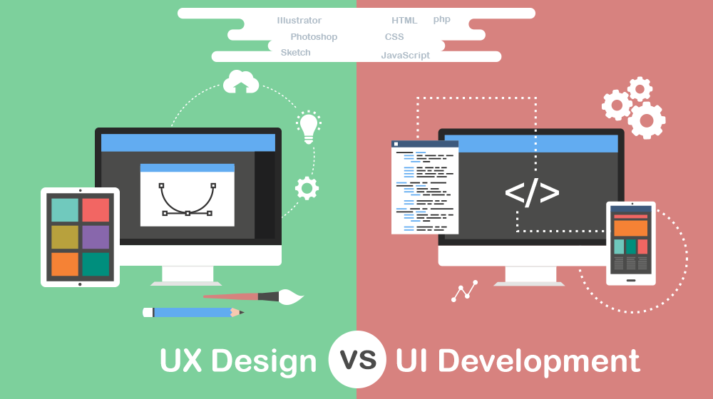

Introduction
User interface (UI), and user experience (UX), designs are extremely important when developing a website, yet so often they are merely just an afterthought. This is problematic, as bad UI and UX instantly result in a bad site – no matter how good the content is. As such, in this blog post I critically analyse both my websites UI and UX. More specifically, I will start by defining each term, before moving on to look at the UI and UX I have implemented, critically reflecting on my decisions.

My first point of departure will be taking the audience through my website experience. To do this, however, we must understand what UX is. UX is all about the functionality of the website, and the experience the user gets from using it. The particular focus is how users experience the site, and how easily they can perform the task they set out to achieve.
Considerations.
With that, we can then start to analyse my websites UX. The website has pursued to follow a user centric design, especially as concerning the color grading. To achieve this, my design was centre around two questions:
Thus, I established two potential goals for users visiting my site – to offer an engaging experience with the character of James Dladla and his photography; in a way that invites the user to come back to the site and read more.
Being aware that the blogs are mainly scholarly and academically structured, the question I asked is how to I make these blogs engaging, while avoiding thick blocks of texts and yet maintaining academic rigour.
The entry point for the website is the landing page, where the user is presented with an image courasel. This is a deliberate design to tell the user that the website is about photography. When my website users presented with the homepage, I accommodate their goals in two ways:
Rationale.
Uusing these, I make the users experience as fluid as possible. However, in the case that the user has other goals, a persistent navigation bar, with clearly labelled items, is present – allowing for easy navigate across the entire site. In addition to this, there is the website’s UI. In general, UI consists of the visual design of the website – encompassing its look, presentation, and interactivity. This can most easily be identified through a websites colour choice, buttons, fonts, and more. I have made these colour choices, fonts, and layout consistent throughout all the gages to unify the website. For my UI, I chose to mainly rely on a minimalistic design, and colour scheme, for multiple reasons.
James Dladla.
The site has to portray the personality of James Dladla, a simple 64-year-old man who is a minimalist. This is further emphasised in the content of the website, simple writing and blogs that relate to simple life issues, like photography. By using a clean user interface, and grayscale, both James’s photography, and all other content across the site, are highlighted and accentuated. Notwithstanding its simplicity and minimalism, usability and accessibility remained at the core of the design.
Conclusion.
In conclusion, by first defining UI and UX, I was able to critically analyse my sites design. However, there are still shortcomings since some elements like layout and padding have not been sufficiently addressed by this analysis.
Bibliography
Carroll, J.M., Mack, R.L. and Kellogg, W.A., 1988. Interface metaphors and user interface design. In Handbook of human-computer interaction (pp. 67-85). North-Holland.
Erickson, T.D., 1995. Working with interface metaphors. In Readings in Human–Computer Interaction (pp. 147-151). Morgan Kaufmann.